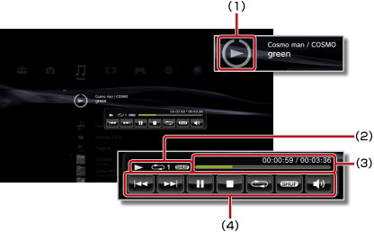

Music > Using the mini-size control panel
Using the mini-size control panel
Use the mini-size control panel to perform various functions while playing music.
1. |
While playing music, press the PS button. |
||||||||
|---|---|---|---|---|---|---|---|---|---|
2. |
Use the directional buttons to select the icon for the music content being played under 
|
Hints
- The icon for the music content being played is displayed directly under the
 (Music) icon.
(Music) icon. - The mini-size control panel can be hidden by pressing the
 button while playing music.
button while playing music.
Previous

Go back to the beginning of the current or previous track.
Next
Go to the beginning of the next track.
Pause
Pause playback.
Stop
Stop playback and hide the mini-size control panel.
Shuffle
Play tracks in a random order.
Repeat
Play tracks repeatedly. You can select one of three repeat modes (shown below) by pressing the  button.
button.
 |
Play one track repeatedly. |
|---|---|
|
Play all tracks repeatedly. |
| No display | Clear repeat play and play all tracks in order. |
Volume Control
Adjust the volume output level of the tracks being played under (Music). You can select one of nine levels.
Hint
The audio output may become distorted if the volume level is set too high. If this happens, lower the level.